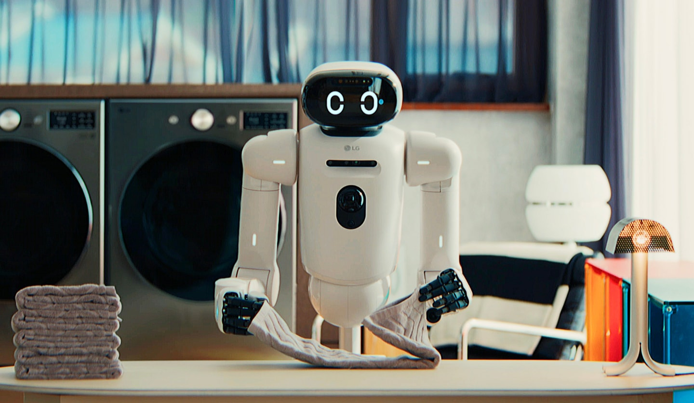

Executive Summary
This article reads the physical AI training data platform CrowdWorks unveiled at AI Festa 2026 at Coex in Seoul on October 7, 2026, alongside the question of whose hands actually make that data. What the company put in its booth was not a finished robot but a collection process. A person wears VR equipment and operates a robot by remote control, and the resulting movement is recorded and processed into training data.
At the same event the company said it has secured 300 million cumulative mission datasets through 670,000 data workers so far. That sentence sits inside a paragraph introducing the robot data platform, but the figure itself does not count robot action data alone. The same metric starts at 300,000 workers in 2021 and climbs to this year's 670,000 as a company-wide running total, and nowhere in the announcement is it written down what was added together.
The facts and figures in this article come from reporting by ZDNet Korea and Venture Square, from coverage of the LG Electronics data factory, and from an in-depth report on data labeler pay in Korea Data Economy News. The pay statistics in section 3 survey the labeling industry as a whole and are not figures CrowdWorks disclosed. The turn toward data quality in section 4 is nobody's claim but this article's reading.
Key numbers
Four numbers, pulled out. The first two are the cumulative figures CrowdWorks put forward this time, and the third is the target set at the site where this data accumulates. The fourth is what this kind of data work pays, a figure surveyed across data labeling in Korea rather than one CrowdWorks disclosed.
Sources: ZDNet Korea (2026-10-07), Etoday, Korea Data Economy News.
670,000
Data workers
A company-wide cumulative membership count carried forward from 300,000 in 2021
300 million
Cumulative mission datasets
Every field added together since the 2017 founding; the robot share is not written down
100,000 hours
LG Electronics' robot data target for this year
About 12 years' worth if you convert it to round-the-clock days
9,860 won
Average real hourly pay for data labelers
An industry-wide survey figure, below this year's minimum wage of 10,320 won
The Hand on the Controls Belongs to a Person
CrowdWorks is an AI training data company that opened in 2017. It has built image and text data the way people build it, attaching labels and checking them by hand, and in August 2023 it became the first training data platform company in Korea to list on Kosdaq. This year it set up a physical AI data lab inside the company to research and field-test multimodal data that runs in real environments, and it has opened regional bases in South Gyeongsang Province and Ulsan to serve as physical AI hubs. What it brought out this time is a product that widens that work to the movements of a robot.
At AI Festa 2026, held at Coex in Seoul from October 6 to 8, the company took a booth in the physical AI and robotics special hall on the third floor, Hall C. What stood on display was the process by which data gets made, not a robot. A worker wears VR equipment and operates a robot remotely, the operation carries over into the robot's movement, and the company showed the whole path of collecting, processing and verifying the physical action records that come out of it.
The product on the booth is called the Physical AI Data Platform. By the company's own description, the range it covers does not stop at remote operation. Action data generated in simulation environments comes into the same process. The scene at the booth was one path among those.
What comes in is not used as it arrives. The company leads with how it cuts collected actions into four levels. One large job is held as a task, the situation it happens in as a scenario, the steps inside it as subtasks, and the smallest unit of movement as an action. The purpose it gives for the hierarchy is to turn operation records that pile up at random into a form a foundation model can learn from directly, and to raise processing efficiency.
Ahead of the exhibition, a CrowdWorks representative said that whether physical AI succeeds rests on how precisely high-quality physical action data can be secured. The diagram below follows one case inside that effort, the one where a person steers the robot directly.
1.1Where the Data Actually Piles Up
The demonstration happened at the booth, but the place where data accumulates is elsewhere. In the world foundation model R&D project promoted by the Ministry of Science and ICT and the Institute of Information and Communications Technology Planning and Evaluation, with LG Electronics as the lead organization, CrowdWorks took on building the data pipeline. LG Electronics supplies the model and the humanoid hardware, and CrowdWorks makes the data. The company holds the same position in a shipbuilding foundation model project run by a UNIST consortium.
The site is the robot data factory LG Electronics opened this August in Yangjae, Seocho-gu, Seoul. In a space modeled on a home the robots clean; in a space modeled on the line of a washing machine plant in Tennessee they move, stack and assemble parts. The robot working there is named CLOiD. It is easy to mix up with CLOi, the service robot brand LG Electronics has used for years, but the one moving in the data factory is CLOiD.

The target hanging over this work shows its scale. On August 18, announcing a collaboration with Nvidia, LG Electronics said it would secure 100,000 hours of robot training data within the year. Converted to round-the-clock days, that is about 12 years' worth. The same announcement included a plan to grow the robot fleet to several hundred units within the year and to invest hundreds of billions of won by 2030. Separately, CrowdWorks is working with KT to collect operation data from server rack inspections.
Where the data comes from is not a single stream either. At the announcement the company said it is obtaining data from three places: robots, simulation and people. The remote operation shown at the booth is the people side, and how much each of the three supplies right now did not come out.
There is a place on the equipment side that the reporting never fills in. Exactly what the worker is holding. The articles covering AI Festa all stop at the words "VR equipment" and "remote operation," and no manufacturer or model name for a motion capture suit or a sensor glove appears anywhere. That sensor gloves are in use at all is confirmed only in a separate announcement this past January, when the company registered three robot training datasets on a data marketplace.
What '670,000 Workers, 300 Million Datasets' Counts
The sentence quoted most often out of this announcement is this one. CrowdWorks has secured 300 million cumulative mission datasets through 670,000 data workers so far. ZDNet Korea put the 300 million straight into its headline, and other outlets carried the same sentence right beside the paragraph introducing the robot data business.
These two numbers are not new to this announcement. Lay out the record of what the company has said about its membership over time and a single line gets drawn.
| When | Data workers | Cumulative data | Where it appeared |
|---|---|---|---|
| November 2021 | about 300,000 | — | Pre-listing reporting |
| August 2023 | about 520,000 | — | Materials from the Kosdaq listing |
| Around 2024 | about 600,000 | about 200 million | Company profile materials and multiple reports |
| October 2026 | 670,000 | 300 million | The AI Festa 2026 announcement |
Table: the cumulative figures CrowdWorks has published, in order of when they appeared. The 2024 row combines company profile materials with reporting from that period.
From 300,000 to 520,000, past 600,000 and up to 670,000. The move from 200 million datasets to 300 million sits on the same line. What this metric counts is all of the work CrowdWorks has built up since it was founded in 2017. Image labeling, text annotation and data for generative AI all go in here. Nothing in the primary reporting supports a separate count of robot action data on its own.
The company did not say anything false. The words "so far" sit at the front of the sentence, and it did not hide that this is a company-wide total. What it did was place that sentence in a paragraph explaining the robot data platform, which makes it easy for a reader to take 300 million as the amount this platform collected. The number is not wrong. The denominator is unwritten.
When you take down a figure from an announcement, the question to ask is not how big it is but what it covers. What was added together here? From when did the counting start? Is this the result of a new business, or the whole history of the company? The 300 million at CrowdWorks splits off at the third question. Figures like this are not rare in industry announcements, which is exactly why they are easy to miss.
Who Makes This Data, and Under What Conditions
Saying a robot learns on its own is half right. Of the three streams above, simulation takes less of a human hand, but the records a physical robot leaves by moving still pile up, at this stage, only when someone holds the controls and repeats the same motion many times over. The 100,000-hour target is hard to read as time a robot fills by moving on its own.
The conditions the people doing that work face have been surveyed separately. An in-depth report Korea Data Economy News published this year estimates about 120,000 data labelers in Korea and puts their average real hourly pay at 9,860 won. That is below this year's statutory minimum wage of 10,320 won. In a 2021 survey by the Seoul Labor Rights Center, 62 percent of full-time labelers earned less than 1.82 million won a month.
The form of the contract hardens that gap. The labeling company Aimmo stopped paying its freelance workers from April 2025, and as of February this year the people affected numbered around 150 and the unpaid wages exceeded 400 million won. Of those affected, 88.2 percent were women. Because they are not recognized as employees under the Labor Standards Act, they could use neither the labor office's remedy process nor the wage substitute payment program. A basic act for working people the government is pursuing would address adequate pay and social protection for roughly 8.7 million platform workers and freelancers, but the detailed design has not come out yet.
Two things need to be kept apart here. First, the statistics above survey the labeling industry as a whole and are not figures CrowdWorks disclosed. Second, steering a robot remotely and drawing boxes on images are different kinds of work. The first reproduces movement with the body; the second annotates in front of a screen. A survey covering pay for people dedicated to teleoperation has not turned up yet.
What remains is the possibility that both kinds of work draw on the same labor pool. The 670,000 CrowdWorks talks about counts people registered as members, and the 120,000 is an estimate of people actually working. The two numbers differ in kind and cannot be set against each other directly, but when demand for robot data grows, it is not hard to guess where those people will be found.
Why Pebblous Is Watching This Announcement
News like this usually gets consumed as one scene in the physical AI race. Seen from where data work sits, something else stands out first. This announcement put two things of different kinds into one paragraph. The first is the robot action data this platform will make from here on; the second is the running total of all the work the company has built up over nine years. Neither is false, and the figure itself is not wrong. Standing side by side, though, the second number reads as the first one's share.
The same trap repeats in the work of judging data quality. When the size of a training dataset is written down without saying whether the count covers this collection round or the whole in-house store, the reader has no way to tell the two apart. The hardest metric to handle is the one whose count is exact and whose scope is empty. A wrong value gets caught by verification, while a value without scope passes verification and produces the misreading anyway.
So there are things that have to be left beside a figure. What did this value add together? From when was it counted? Who built it, by what standard, and who checked that standard? Robot action data is a field where the last question weighs the most. Because the movement a person steered becomes the model's baseline as it is, the skill and the working conditions of whoever steered ride straight into the quality of the data.
The larger the market for physical AI training data grows, the more often those questions will come back. Before memorizing how big a figure in an announcement is, it is worth finding one more line: what the figure counted.
Thanks for reading this far. The ZDNet Korea report on the CrowdWorks announcement at AI Festa is here, and the Venture Square report, which describes the demonstration in more detail, is here. If your own dataset metrics have a way of recording scope, we would be glad to hear how you do it.
References
AI Festa 2026 Coverage
- 1.ZDNet Korea. (2026). "'300 Million Datasets Accumulated'... CrowdWorks Takes Aim at the Physical AI Data Market." (Korean)
- 2.ZDNet Korea. (2026). "CrowdWorks Unveils Physical AI Data Building Capability at AI Festa." (Korean)
- 3.Venture Square. (2026). "CrowdWorks Turns Human-Steered Robot Movement Into Training Data... Demonstrated at AI Festa 2026." (Korean)
- 4.Industry News. (2026). "CrowdWorks Joins AI Festa 2026... Discloses Robot Training Data Building Process." (Korean)
- 5.Korea Economic Times (KET). (2026). "Mining Robot Action Data With VR... CrowdWorks' Gambit." (Korean)
- 6.Electronic Times (Etnews). (2026-01-13). "CrowdWorks Registers Three 'Physical AI Dataset' Products for Robot Training." (Korean; a separate January announcement unrelated to AI Festa 2026)
- 7.Etoday. (2026). "LG Electronics Accelerates Robotics Collaboration With Nvidia... 12 Years' Worth of Data Within the Year." (Korean)
- 8.Nate News. (2026). "LG Electronics Opens 10,000-sq-m 'Robot Data Factory' in Yangjae... Full Operation Within the Year." (Korean)
- 9.LG Electronics Newsroom. (2026). "LG Electronics Presents LG CLOiD Home Robot to Demonstrate Zero-Labor Home at CES 2026."
Data Labor Conditions
- 10.Korea Data Economy News. (2026). "[In-Depth Report] The Cry of 120,000 Data Labelers... "Heroes of the AI Revolution" or "Digital Day Laborers"?." (Korean)
- 11.AI Times. (2026). ""55.6% of Data Labelers Work It as a Side Job"... CrowdWorks Publishes Data Labeler Status Report." (Korean)
Company Background
- 12.The Economist (Korea). (2023). "What CrowdWorks' Kosdaq Listing Means." (Korean)